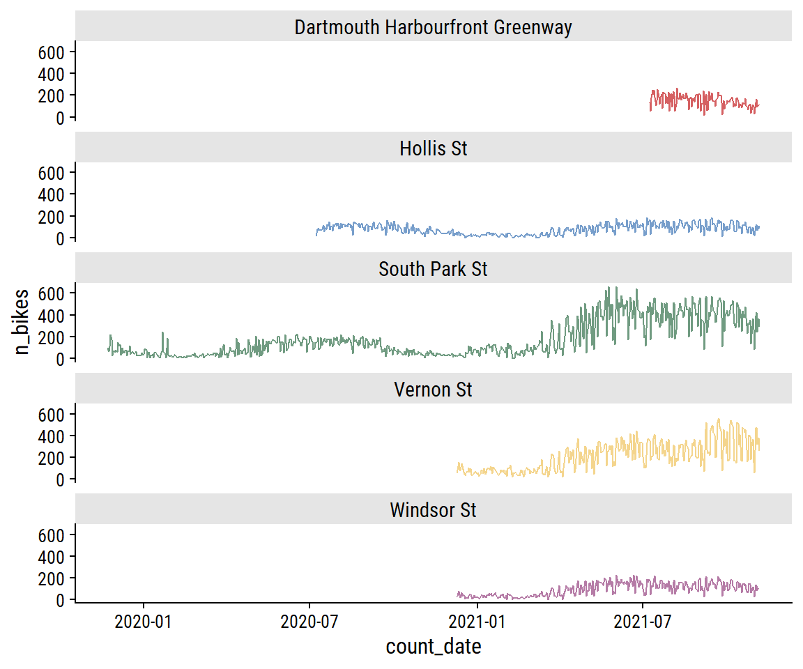
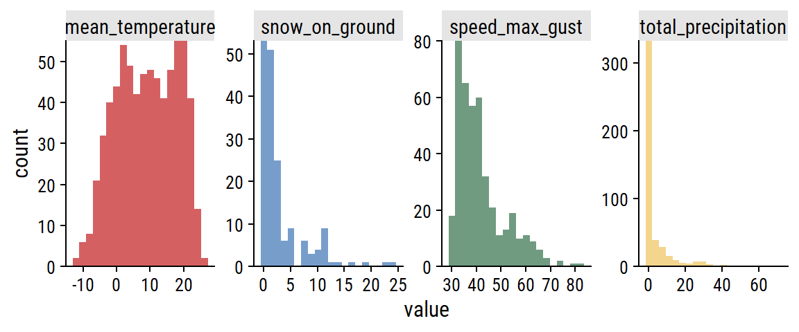
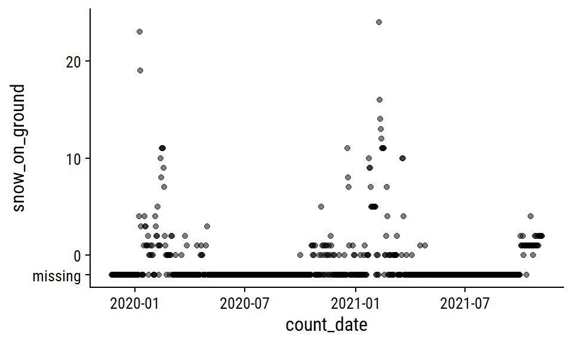
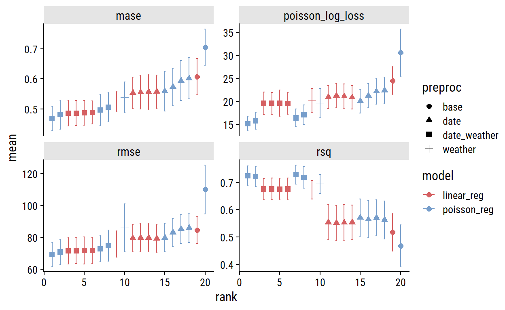
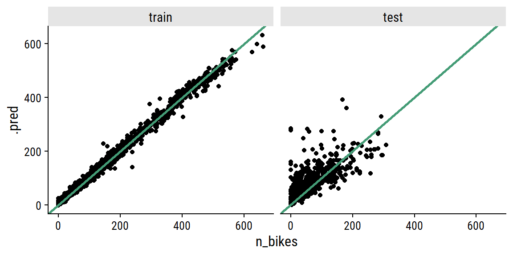
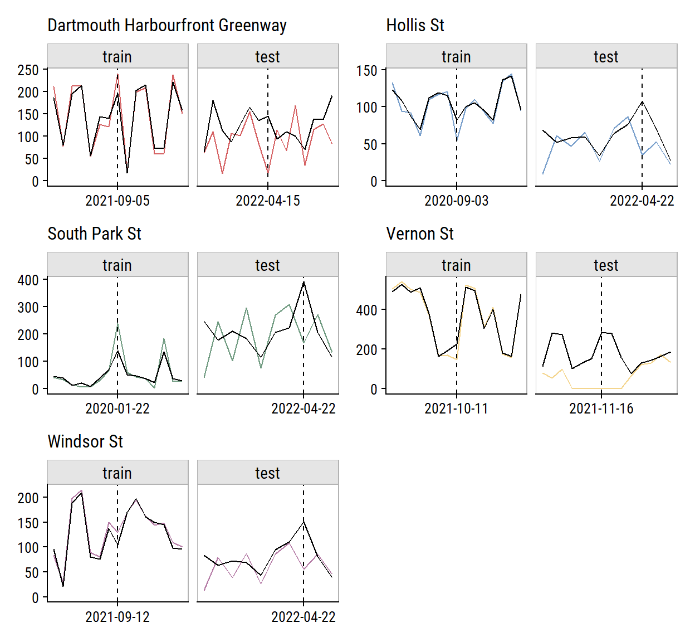

Setup
knitr::opts_chunk$set(echo = TRUE)
library(tidyverse)
library(gt)
library(patchwork)
library(tidymodels)
library(tictoc)
library(dunnr)
extrafont::loadfonts(device = "win", quiet = TRUE)
theme_set(theme_td())
set_geom_fonts()
set_palette()
Introduction
In my last post, I retrieved, explored, and prepared bike counter data from Halifax, Nova Scotia. I also got some historical weather data to go along with it. Here, I will further explore the data, engineer some features, and fit and evaluate many models to predict bike ridership at different sites around the city.
Exploratory data analysis
Import the data:
bike_ridership <- read_rds("bike-ridership-data.rds")
glimpse(bike_ridership)
Rows: 2,840
Columns: 9
$ site_name <chr> "Dartmouth Harbourfront Greenway", "Dart
$ installation_date <date> 2021-07-08, 2021-07-08, 2021-07-08, 202
$ count_date <date> 2021-07-08, 2021-07-09, 2021-07-10, 202
$ n_records <int> 48, 48, 48, 48, 48, 48, 48, 48, 48, 48,
$ n_bikes <int> 130, 54, 180, 245, 208, 250, 182, 106, 1
$ mean_temperature <dbl> 18.2, 17.6, 21.0, 21.0, 20.6, 18.6, 17.7
$ total_precipitation <dbl> 0.6, 10.0, 0.4, 0.0, 0.0, 0.0, 0.0, 11.6
$ speed_max_gust <int> NA, 54, 56, NA, NA, NA, NA, 32, 37, NA,
$ snow_on_ground <int> NA, NA, NA, NA, NA, NA, NA, NA, NA, NA, This data consists of daily bike counts (n_bikes) over a
24 hour period (count_date) recorded at 5 sites
(site_name) around the city. In the original data, counts
are recorded every hour which is reflected by the n_records
variable:
| site_name | n_records | n |
|---|---|---|
| Dartmouth Harbourfront Greenway | 8 | 1 |
| Dartmouth Harbourfront Greenway | 48 | 291 |
| Hollis St | 4 | 1 |
| Hollis St | 24 | 656 |
| South Park St | 8 | 1 |
| South Park St | 48 | 884 |
| Vernon St | 8 | 1 |
| Vernon St | 48 | 502 |
| Windsor St | 8 | 1 |
| Windsor St | 48 | 502 |
All
except the Hollis St site have two channels (northbound and
southbound), which is why n_records = 48. The entries with
fewer n_records reflect the time of day that the data was
extracted:
| site_name | count_date | n_records |
|---|---|---|
| Dartmouth Harbourfront Greenway | 2022-04-25 | 8 |
| Hollis St | 2022-04-25 | 4 |
| South Park St | 2022-04-25 | 8 |
| Vernon St | 2022-04-25 | 8 |
| Windsor St | 2022-04-25 | 8 |
For this analysis, I will exclude this incomplete day:
The date ranges for each site:
bike_ridership %>%
group_by(site_name) %>%
summarise(
min_date = min(count_date), max_date = max(count_date),
n_days = n(), .groups = "drop"
) %>%
mutate(
site_name = fct_reorder(site_name, min_date),
n_days_label = ifelse(site_name == levels(site_name)[1],
str_c("n_days = ", n_days), n_days),
midpoint_date = min_date + n_days / 2
) %>%
ggplot(aes(y = site_name, color = site_name)) +
geom_linerange(aes(xmin = min_date, xmax = max_date)) +
geom_point(aes(x = min_date)) +
geom_point(aes(x = max_date)) +
geom_text(aes(label = n_days_label, x = midpoint_date), vjust = -0.5) +
scale_y_discrete(labels = ~ str_wrap(., width = 15)) +
labs(y = NULL, x = "min_date -> max_date") +
theme(legend.position = "none")

Before any more EDA, Ill split the data into training and testing
sets (and only look at the training data going forward). For time series
data, there is the rsample::initial_time_split() function,
which Ill use to make a 70-30 split:
# Need to order by time to properly use time split
bike_ridership <- bike_ridership %>% arrange(count_date, site_name)
bike_split <- initial_time_split(bike_ridership, prop = 0.7)
bike_train <- training(bike_split)
bike_test <- testing(bike_split)
bind_rows(
train = bike_train, test = bike_test, .id = "data_set"
) %>%
group_by(data_set, site_name) %>%
summarise(
min_date = min(count_date), max_date = max(count_date),
n_days = n(), midpoint_date = min_date + n_days / 2,
.groups = "drop"
) %>%
ggplot(aes(y = fct_reorder(site_name, min_date), color = data_set)) +
geom_linerange(aes(xmin = min_date, xmax = max_date),
position = position_dodge(0.2)) +
geom_point(aes(x = min_date), position = position_dodge(0.2)) +
geom_point(aes(x = max_date), position = position_dodge(0.2)) +
geom_text(aes(label = n_days, x = midpoint_date), vjust = -0.5,
position = position_dodge(0.2), show.legend = FALSE) +
labs(x = "date range", y = NULL, color = NULL)

It might make more sense to stratify by site_name so
that there is a 70-30 split in each site. 1 For
now, Im using a simpler approach to split into the first 70% and 30% of
the data.
For each site, the distribution of daily n_bikes:
bike_train %>%
ggplot(aes(x = n_bikes, fill = site_name)) +
geom_histogram(bins = 30) +
facet_wrap(~ str_trunc(site_name, 25)) +
theme(legend.position = "none")

The South Park St site appears bimodal, which I noted in part 1 was likely due to the addition of protected bike lanes in 2021. This can be seen more clearly in the trend over time:
bike_train %>%
ggplot(aes(x = count_date, y = n_bikes, color = site_name)) +
geom_line() +
facet_wrap(~ site_name, ncol = 1) +
theme(legend.position = "none")

As you would expect for data in the same city, bike counters between sites are very highly correlated, which I can visualize:
bike_train %>%
transmute(count_date, n_bikes1 = n_bikes,
site_name1 = factor(str_trunc(site_name, 10))) %>%
left_join(., rename(., n_bikes2 = n_bikes1, site_name2 = site_name1),
by = "count_date") %>%
filter(as.numeric(site_name1) < as.numeric(site_name2)) %>%
ggplot(aes(x = n_bikes1, y = n_bikes2)) +
geom_point(aes(color = site_name1), alpha = 0.3) +
facet_grid(site_name2 ~ site_name1) +
theme(legend.position = "none") +
dunnr::add_facet_borders()

The day of the week effect looks important:
bike_train %>%
mutate(day_of_week = lubridate::wday(count_date, label = TRUE)) %>%
ggplot(aes(x = day_of_week, y = n_bikes)) +
geom_jitter(aes(color = site_name), height = 0, width = 0.2, alpha = 0.3) +
stat_summary(fun = "mean", geom = "point") +
facet_wrap(~ str_trunc(site_name, 30)) +
theme(legend.position = "none") +
dunnr::add_facet_borders()

Another thing to consider is holidays. I can get Canadian holidays
with the timeDate package (this is how
recipes::step_holiday() works):
library(timeDate)
canada_holidays <-
timeDate::listHolidays(
pattern = "^CA|^Christmas|^NewYears|Easter[Sun|Mon]|^GoodFriday|^CaRem"
)
canada_holidays
[1] "CACanadaDay" "CACivicProvincialHoliday"
[3] "CALabourDay" "CaRemembranceDay"
[5] "CAThanksgivingDay" "CAVictoriaDay"
[7] "ChristmasDay" "ChristmasEve"
[9] "EasterMonday" "EasterSunday"
[11] "GoodFriday" "NewYearsDay" Then get the dates for each across the years in the bike data:
canada_holiday_dates <- tibble(holiday = canada_holidays) %>%
crossing(year = 2019:2022) %>%
mutate(
holiday_date = map2(
year, holiday,
~ as.Date(timeDate::holiday(.x, .y)@Data)
)
) %>%
unnest(holiday_date)
canada_holiday_dates %>%
select(holiday, holiday_date) %>%
rmarkdown::paged_table()
Only day I can think is missing from this list is Family Day
(Heritage Day in Nova Scotia) which is the third Monday in February.
Visualize the effect of these holidays on bike ridership by plotting
n_bikes in a 2 week window around the holidays (showing
just the South Park St site for this plot):
canada_holiday_dates %>%
filter(holiday_date %in% unique(bike_train$count_date)) %>%
mutate(
date_window = map(holiday_date, ~ seq.Date(.x - 7, .x + 7, by = "1 day"))
) %>%
unnest(date_window) %>%
left_join(
bike_train, by = c("date_window" = "count_date")
) %>%
mutate(is_holiday = holiday_date == date_window) %>%
group_by(holiday) %>%
mutate(day_from_holiday = as.numeric(holiday_date - date_window)) %>%
ungroup() %>%
filter(site_name == "South Park St") %>%
ggplot(aes(x = day_from_holiday, y = n_bikes,
group = factor(year))) +
geom_line() +
geom_vline(xintercept = 0, lty = 2) +
geom_point(aes(color = factor(year))) +
facet_wrap(~ holiday) +
labs(color = "year") +
dunnr::add_facet_borders() +
theme(legend.position = "top")

The only holidays with a clear drop in ridership are Labour Day and
the Civic Holiday (called Natal Day in NS) in 2021. Victoria Day seems
to have the opposite effect. The Good Friday, Easter Sunday and Easter
Monday holidays are obviously overlapping, and the n_bikes
trend is a bit of a mess, but I can see an indication to the left of
Good Friday that there may be a drop in ridership going into that
weekend.
One thing to note is that the first, middle and last points correspond to the same day of the week, and the middle point in this set is usually lower than those two point, so holidays may be useful features in conjunction with day of the week.
The weather variables have varying levels of completeness:
# Separate out the weather data
weather_data <- bike_train %>%
distinct(count_date, mean_temperature, total_precipitation,
speed_max_gust, snow_on_ground)
weather_data %>%
mutate(across(where(is.numeric), is.na)) %>%
pivot_longer(cols = -count_date) %>%
ggplot(aes(x = count_date, y = name)) +
geom_tile(aes(fill = value)) +
labs(y = NULL, x = NULL, fill = "Missing") +
scale_fill_manual(values = c(td_colors$nice$indigo_blue, "gray80")) +
scale_x_date(expand = c(0, 0)) +
scale_y_discrete(expand = c(0, 0)) +
theme(legend.position = "top")

The distributions:
weather_data %>%
pivot_longer(cols = -count_date) %>%
filter(!is.na(value)) %>%
ggplot(aes(x = value, fill = name)) +
geom_histogram(bins = 20) +
scale_y_continuous(expand = c(0, 0)) +
facet_wrap(~ name, nrow = 1, scales = "free") +
theme(legend.position = "none")

For non-missing cases, plot the pairwise relationships:
weather_data %>%
pivot_longer(cols = -count_date, names_to = "var1", values_to = "val1") %>%
mutate(var1 = factor(var1)) %>%
left_join(., rename(., var2 = var1, val2 = val1),
by = "count_date") %>%
filter(!is.na(val1), !is.na(val2),
# Use numeric factor labels to remove duplicates
as.numeric(var1) < as.numeric(var2)) %>%
ggplot(aes(x = val1, y = val2, color = var1)) +
geom_point(alpha = 0.5) +
facet_grid(var2 ~ var1, scales = "free") +
theme(legend.position = "none") +
dunnr::add_facet_borders()

The clearest relationship to me is unsurprising: increasing
mean_temperature is associated with decreasing
snow_on_ground (top left plot).
Visualize relationships with n_bikes:
bike_train %>%
pivot_longer(
cols = c(mean_temperature, total_precipitation,
speed_max_gust, snow_on_ground),
names_to = "var", values_to = "val"
) %>%
filter(!is.na(val)) %>%
ggplot(aes(x = val, y = n_bikes)) +
geom_point(aes(color = str_trunc(site_name, 15)), alpha = 0.4) +
facet_wrap(~ var, nrow = 2, scales = "free_x") +
dunnr::add_facet_borders() +
labs(x = NULL, color = NULL) +
theme(legend.position = "bottom")

All of the weather variables seem to be have a relationship with
n_bikes. In terms of predictive value,
mean_temperature looks like it might be the most useful,
and speed_max_gust the least.
Feature engineering
From my EDA, I decided I want try including all 4 weather variables to predict bike ridership. This will require imputation of missing values for all 4, which Ill attempt here.
Add some more time variables for working with the
weather_data:
Temperature
The mean_temperature variable is missing 3% of values.
Visualize the trend over time:
p1 <- weather_data %>%
filter(!is.na(mean_temperature)) %>%
ggplot(aes(x = count_date, y = mean_temperature)) +
geom_line(aes(color = factor(count_year))) +
scale_color_viridis_d("year") +
scale_x_date("date", date_breaks = "1 year")
p2 <- weather_data %>%
filter(!is.na(mean_temperature)) %>%
ggplot(aes(x = count_yday, y = mean_temperature)) +
geom_line(aes(color = factor(count_year))) +
scale_color_viridis_d("year") +
scale_x_continuous("day of year", breaks = c(0, 90, 180, 270, 365)) +
labs(y = NULL)
p1 + p2 +
plot_layout(guides = "collect") &
theme(legend.position = "top")

The cyclic nature makes it a good candidate for smoothing splines. As
a starting point, try a natural spline with 5 knots on the
count_yday variable:
We can obviously do a lot better, especially at the yearly
boundaries. Ill fit the data using a generalized additive model (GAM)
with the mgcv package.2 For the
count_yday variable (ranges from 1-365), Ill make sure
that there is no discontinuity between year by using a cyclic
spline (bs = "cc"). Ill also include a smoothing term of
count_day which will capture the trend across years.
library(mgcv)
gam_temperature <-
gam(mean_temperature ~ s(count_yday, bs = "cc", k = 12) + s(count_day),
data = filter(weather_data, !is.na(mean_temperature)))
plot(gam_temperature, pages = 1, shade = TRUE)

The left plot shows the seasonal trend within a year (note the lines
would connect at count_yday = 1 and 365), and the right
plot shows the increase in average temperature throughout time (across
years) after accounting for the seasonal effect. Overlay the fit:
Im pretty happy with that. Ill use predictions from this GAM to impute missing daily temperatures.
Precipitation and snow
The total_precipitation variable is missing 36% of
values; 76% for snow_on_ground.
The total_precipitation distribution:
p1 <- weather_data %>%
mutate(total_precipitation = replace_na(total_precipitation, -5)) %>%
ggplot(aes(x = count_date, y = total_precipitation)) +
geom_point(alpha = 0.5) +
scale_y_continuous(breaks = c(-5, 0, 20, 40, 60),
labels = c("missing", 0, 20, 40, 60))
p1

This pattern of missing data during winter months makes me think that
the total_precipitation is actually total rainfall,
i.e.snowfall is not counted. Im going to impute the missing values
with 0 during pre-processing, which is admittedly a poor approximation
of the truth.
The snow_on_ground distribution:
p2 <- weather_data %>%
mutate(snow_on_ground = replace_na(snow_on_ground, -2)) %>%
ggplot(aes(x = count_date, y = snow_on_ground)) +
geom_point(alpha = 0.5) +
scale_y_continuous(breaks = c(-2, 0, 10, 20),
labels = c("missing", 0, 10, 20))
p2

Ill also impute zero for missing snow_on_ground, which
Im a lot more confident doing here because most of the missing values
occur during non-winter months. A more careful approach might involve
imputing 0 during non-winter months that Im certain would have no snow
on the ground, then modeling the winter months with something like a
zero-inflated Poisson model.
Wind speed
The speed_max_gust variable is the daily maximum wind
speed in km/h, and has 41% missing values.
mean_speed <- mean(weather_data$speed_max_gust, na.rm = TRUE)
weather_data %>%
mutate(
speed_max_gust = replace_na(speed_max_gust, 20)
) %>%
ggplot(aes(x = count_date, y = speed_max_gust)) +
geom_line(data = . %>% filter(speed_max_gust > 20)) +
geom_smooth(data = . %>% filter(speed_max_gust > 20),
method = "loess", formula = "y ~ x",
color = td_colors$nice$spanish_blue) +
geom_hline(yintercept = mean_speed,
color = td_colors$nice$opera_mauve, size = 1, lty = 2) +
geom_jitter(data = . %>% filter(speed_max_gust == 20),
width = 0, alpha = 0.5) +
scale_y_continuous(breaks = c(mean_speed, 20, 40, 60, 80),
labels = c("mean_speed", "missing", 40, 60, 80))
Relative to the noise, the time trends are pretty minor, and the missing data looks to be missing mostly at random. Ill just impute using the mean speed.
Lagged counts
As a time series data set, it would be careless to not account for
past data when predicting future data, so Ill include lagged
n_bikes values. Investigate the correlation in
n_bikes for values lagged by 1, 2 and 3 days, and by 1 and
2 weeks (because they are the same day of the week):
bike_train_lag <- bike_train %>%
arrange(site_name, count_date) %>%
group_by(site_name) %>%
mutate(
n_bikes_lag_1 = lag(n_bikes, 1),
n_bikes_lag_2 = lag(n_bikes, 2),
n_bikes_lag_3 = lag(n_bikes, 3),
n_bikes_lag_7 = lag(n_bikes, 7),
n_bikes_lag_14 = lag(n_bikes, 14)
)
bike_train_lag %>%
select(site_name, count_date, starts_with("n_bikes")) %>%
pivot_longer(cols = matches("n_bikes_lag"),
names_to = "lag_days", values_to = "n_bikes_lag") %>%
filter(!is.na(n_bikes_lag)) %>%
mutate(lag_days = str_extract(lag_days, "\\d+") %>% as.integer()) %>%
group_by(site_name, lag_days) %>%
mutate(corr_coef = cor(n_bikes, n_bikes_lag)) %>%
ggplot(aes(x = n_bikes_lag, y = n_bikes, color = site_name)) +
geom_point(alpha = 0.2) +
geom_label(data = . %>% distinct(n_bikes_lag, site_name, corr_coef),
aes(label = round(corr_coef, 2), x = 500, y = 200)) +
geom_abline(slope = 1) +
facet_grid(str_trunc(site_name, 8) ~ factor(lag_days)) +
dunnr::add_facet_borders() +
theme(legend.position = "none")

The 7- and 14-day lagged values are correlated just as strongly (in some cases stronger) than the other options. This is great news because I only want to include a single lag variable, and using the 14th day lag means I can forecast 14 days ahead.
In order to use 14-day lag in a tidymodels workflow, I
need to add it to the data myself. The step_lag() function
wont allow the outcome n_bikes to be lagged, because any
new data wont have an n_bikes variable to use. See the warning in
this section of the Tidy Modeling with R book. Add the
n_bikes_lag_14 predictor, and exclude any values without
it:
While Im at it, Ill impute the missing
mean_temperature values with the seasonal GAM.
bike_ridership <- bike_ridership %>%
mutate(
count_day = as.numeric(count_date - min(count_date)),
count_yday = lubridate::yday(count_date),
) %>%
bind_cols(pred = predict(gam_temperature, newdata = .)) %>%
mutate(
mean_temperature = ifelse(is.na(mean_temperature), pred,
mean_temperature)
) %>%
select(-count_day, -count_yday, -pred)
This means Ill have to re-split the data into training and testing
(initial_time_split() isnt random, so doesnt require
setting the seed):
Modeling
Register parallel computing:
n_cores <- parallel::detectCores(logical = FALSE)
library(doParallel)
cl <- makePSOCKcluster(n_cores - 1)
registerDoParallel(cl)
# This extra step makes sure the parallel workers have access to the
# `tidyr::replace_na()` function during pre-processing, which I use later on
# See this issue: https://github.com/tidymodels/tune/issues/364
parallel::clusterExport(cl, c("replace_na"))
Resampling and metrics
For re-sampling, I will use sliding_period() to break up
the data into 14 months of data (chosen to give 10 resamples) for
analysis and 1 month for assessment:
bike_resamples <-
sliding_period(bike_train, index = count_date,
period = "month", lookback = 13, assess_stop = 1)
Visualize the resamples:
bind_rows(
analysis_set = map_dfr(bike_resamples$splits, analysis, .id = "i"),
assessment_set = map_dfr(bike_resamples$splits, assessment, .id = "i"),
.id = "data_set"
) %>%
mutate(i = as.integer(i)) %>%
group_by(i, data_set) %>%
summarise(
min_date = min(count_date), max_date = max(count_date),
n_days = n(), midpoint_date = min_date + n_days / 2,
.groups = "drop"
) %>%
ggplot(aes(y = factor(i), color = data_set)) +
geom_linerange(aes(xmin = min_date, xmax = max_date),
position = position_dodge(0.3)) +
geom_point(aes(x = min_date), position = position_dodge(0.3)) +
geom_point(aes(x = max_date), position = position_dodge(0.3)) +
labs(x = "date range", y = NULL, color = NULL)
Ill define a set of metrics to use here as well:
bike_metrics <- metric_set(rmse, rsq, mase, poisson_log_loss)
The Poisson log loss is a new one to me, that was recently
added to yardstick. Ill include it just for kicks, but
I will choose my final model with mase, the mean absolute
scaled error, which was introduced by Hyndman and Koehler (Hyndman and Koehler 2006). The MASE
involves dividing the absolute forecast error (\(|y_i - \hat{y}_i|\)) by absolute
naive forecast error (which involves predicting with the last
observed value). The main advantage of this is that it is scale
invariant. Mean absolute percentage error (MAPE) is the typical
scale-invariant choice in regression problems, but the MASE avoids
dividing by n_bikes = 0 (of which there are about 20 in
this data set). It also has a straightforward interpretation: values
greater than one indicate a worse forecast than the naive method, and
values less indicate better.
Generalized linear models
The first models I will try are simple linear regression and Poisson
regression, but I will test out a few different pre-processing/feature
combinations. I would prefer to use negative binomial regression instead
of Poisson to account for overdispersion (see aside), but it
hasnt been implemented in parsnip yet.
lm_spec <- linear_reg(engine = "lm")
library(poissonreg) # This wrapper package is required to use `poisson_reg()`
poisson_spec <- poisson_reg(engine = "glm")
For my base pre-processing, Ill include just site_name
and n_bikes_lag_14:
The first extension of this recipe will include date variables. Ill add day of week as categorical, day of year as numerical (and tune a natural spline function), year as numerical and Canadian holidays as categorical.
glm_recipe_date <-
recipe(n_bikes ~ count_date + site_name + n_bikes_lag_14,
data = bike_train) %>%
add_role(count_date, new_role = "date_variable") %>%
step_date(count_date, features = c("dow", "doy", "year"),
label = TRUE, ordinal = FALSE) %>%
step_ns(count_date_doy, deg_free = tune()) %>%
step_holiday(count_date, holidays = canada_holidays) %>%
step_novel(all_nominal_predictors()) %>%
step_dummy(all_nominal_predictors()) %>%
step_zv(all_predictors())
Ill consider the weather variables, with the imputations discussed in the feature engineering section, separately:
glm_recipe_weather <-
recipe(n_bikes ~ count_date + site_name + n_bikes_lag_14 + mean_temperature +
total_precipitation + speed_max_gust + snow_on_ground,
data = bike_train) %>%
add_role(count_date, new_role = "date_variable") %>%
step_impute_mean(speed_max_gust) %>%
# Impute these missing values with zero
step_mutate_at(c(total_precipitation, snow_on_ground),
fn = ~ replace_na(., 0)) %>%
step_novel(all_nominal_predictors()) %>%
step_dummy(all_nominal_predictors()) %>%
step_zv(all_predictors())
And lastly, all the features together:
glm_recipe_date_weather <-
recipe(n_bikes ~ count_date + site_name + n_bikes_lag_14 + mean_temperature +
total_precipitation + speed_max_gust + snow_on_ground,
data = bike_train) %>%
add_role(count_date, new_role = "date_variable") %>%
step_date(count_date, features = c("dow", "doy", "year"),
label = TRUE, ordinal = FALSE) %>%
step_ns(count_date_doy, deg_free = tune()) %>%
step_holiday(count_date, holidays = canada_holidays) %>%
step_impute_mean(speed_max_gust) %>%
step_mutate_at(c(total_precipitation, snow_on_ground),
fn = ~ replace_na(., 0)) %>%
step_novel(all_nominal_predictors()) %>%
step_dummy(all_nominal_predictors()) %>%
step_zv(all_predictors())
Put these pre-processing recipes and the model specifications into a
workflow_set():
Now fit the resamples using each combination of model specification and pre-processing recipe:
tic()
glm_wf_set_res <- workflow_map(
glm_wf_set,
"tune_grid",
# I'll try just a few `deg_free` in the spline term
grid = grid_regular(deg_free(range = c(4, 7)), levels = 4),
resamples = bike_resamples, metrics = bike_metrics
)
toc()
35.22 sec elapsedFor plotting the results this set of workflows, Ill use a custom
plotting function with rank_results():
plot_wf_set_metrics <- function(wf_set_res, rank_metric = "mase") {
rank_results(wf_set_res, rank_metric = rank_metric) %>%
mutate(preproc = str_remove(wflow_id, paste0("_", model))) %>%
ggplot(aes(x = rank, y = mean, color = model, shape = preproc)) +
geom_point(size = 2) +
geom_errorbar(aes(ymin = mean - std_err, ymax = mean + std_err),
width = 0.2) +
facet_wrap(~ .metric, scales = "free_y")
}
plot_wf_set_metrics(glm_wf_set_res)

Across the board, the model will all the features (date and weather predictors; indicated by the square symbols) are best, and Poisson regression slightly outperforms linear. Here are the models ranked by MASE: 3
rank_results(glm_wf_set_res, select_best = TRUE, rank_metric = "mase") %>%
filter(.metric == "mase") %>%
select(rank, wflow_id, .config, mase = mean, std_err) %>%
gt() %>%
fmt_number(columns = c(mase, std_err), decimals = 3)
| rank | wflow_id | .config | mase | std_err |
|---|---|---|---|---|
| 1 | date_weather_poisson_reg | Preprocessor2_Model1 | 0.469 | 0.041 |
| 2 | date_weather_linear_reg | Preprocessor4_Model1 | 0.486 | 0.042 |
| 3 | weather_linear_reg | Preprocessor1_Model1 | 0.525 | 0.034 |
| 4 | weather_poisson_reg | Preprocessor1_Model1 | 0.539 | 0.051 |
| 5 | date_linear_reg | Preprocessor2_Model1 | 0.554 | 0.052 |
| 6 | date_poisson_reg | Preprocessor2_Model1 | 0.559 | 0.065 |
| 7 | base_linear_reg | Preprocessor1_Model1 | 0.607 | 0.060 |
| 8 | base_poisson_reg | Preprocessor1_Model1 | 0.704 | 0.061 |
So our best workflow has the id
date_weather_poisson_reg4 with the
.config Preprocessor2_Model1 which refers to a specific
spline degree from our tuning of the count_date_doy
feature. I can check out the results of the tuning with
autoplot():
autoplot(glm_wf_set_res, id = "date_weather_poisson_reg") +
facet_wrap(~ .metric, nrow = 2, scales = "free_y")
The polynomial of degree 5 did best here, which Ill use to finalize the workflow and fit to the full training set:
Model interpretation
An advantage of using a generalized linear model is that they are
easy to interpret. A simple way to estimate variable important in a GLM
is to look at the absolute value of the \(t\)-statistic (statistic in
the below table) here are the top 5:
# A tibble: 5 5
term estimate std.error statistic p.value
<chr> <dbl> <dbl> <dbl> <dbl>
1 total_precipitation -0.0380 0.000454 -83.7 0
2 site_name_South.Park.St 0.684 0.0101 68.0 0
3 site_name_Vernon.St 0.542 0.00949 57.2 0
4 mean_temperature 0.0371 0.000677 54.7 0
5 n_bikes_lag_14 0.000985 0.0000208 47.3 0A couple of the weather variables are among the most influential in
predicting n_bikes. Here are all the weather
coefficients:
tidy(glm_poisson_fit) %>%
filter(str_detect(term, "temperature|precip|max_gust|snow"))
# A tibble: 4 5
term estimate std.error statistic p.value
<chr> <dbl> <dbl> <dbl> <dbl>
1 mean_temperature 0.0371 0.000677 54.7 0
2 total_precipitation -0.0380 0.000454 -83.7 0
3 speed_max_gust -0.00827 0.000373 -22.2 4.67e-109
4 snow_on_ground -0.0619 0.00183 -33.7 2.26e-249Since this is a Poisson model, the link function (non-linear relationship between the outcome and the predictors) is the logarithm:
\[ \begin{align} \log{n}_{\text{bikes}} &= \beta_0 + \beta_1 x_1 + \dots + \beta_p x_p \\ n_{\text{bikes}} &= \text{exp}(\beta_0 + \beta_1 x_1 + \dots + \beta_p x_p) \\ &= \text{exp}(\beta_0) \text{exp}(\beta_1 x_1) \dots \text{exp}(\beta_p x_p) \\ \end{align} \]
So the coefficients are interpreted as: for every one unit increase in \(x_i\), the expected value of \(n_{\text{bikes}}\) changes by multiplicative factor of \(\text{exp}(\beta_i)\), holding all other predictors constant. Here are some plain-language interpretations of the weather coefficients:
- For every 5C increase in daily average temperature
(
mean_temperature), the expected value ofn_bikesincreases by 120%. - For every 10mm increase in daily rain
(
total_precipitation), the expected value ofn_bikesdecreases by 68%. - For every 10km/h increase in maximum wind speed
(
speed_max_gust), the expected value ofn_bikesdecreases by 92%. - For every 5cm of snow (
snow_on_ground), the expected value ofn_bikesdecreases by 73%.
A more thorough and formal analysis of these types of relationships
should involve exploration of marginal effects (with a package like
marginaleffects for example), but Ill move on to other
models.
Tree-based methods
For tree-based methods, Ill use similar pre-processing as with GLM, except I wont use a spline term (trees partition the feature space to capture non-linearity):
trees_recipe <-
recipe(n_bikes ~ count_date + site_name + n_bikes_lag_14 + mean_temperature +
total_precipitation + speed_max_gust + snow_on_ground,
data = bike_train) %>%
update_role(count_date, new_role = "date_variable") %>%
step_date(count_date, features = c("dow", "doy", "year"),
label = TRUE, ordinal = FALSE) %>%
step_holiday(count_date, holidays = canada_holidays) %>%
step_novel(all_nominal_predictors()) %>%
step_impute_mean(speed_max_gust) %>%
step_mutate_at(c(total_precipitation, snow_on_ground),
fn = ~ replace_na(., 0)) %>%
step_zv(all_predictors())
# XGBoost requires dummy variables
trees_recipe_dummy <- trees_recipe %>%
step_dummy(all_nominal_predictors())
Ill try a decision tree, a random forest, and an XGBoost model, each with hyperparameters indicated for tuning:
decision_spec <-
decision_tree(cost_complexity = tune(), tree_depth = tune(),
min_n = tune()) %>%
set_engine("rpart") %>%
set_mode("regression")
rf_spec <- rand_forest(mtry = tune(), min_n = tune(), trees = 1000) %>%
# Setting the `importance` parameter now lets me use `vip` later
set_engine("ranger", importance = "permutation") %>%
set_mode("regression")
xgb_spec <- boost_tree(
mtry = tune(), trees = tune(), min_n = tune(),
tree_depth = tune(), learn_rate = tune()
) %>%
set_engine("xgboost") %>%
set_mode("regression")
trees_wf_set <- workflow_set(
preproc = list(trees_recipe = trees_recipe,
trees_recipe = trees_recipe,
trees_recipe_dummy = trees_recipe_dummy),
models = list(rf = rf_spec, decision = decision_spec, xgb = xgb_spec),
cross = FALSE
)
As a first pass, Ill let tune_grid() choose 10
parameter combinations automatically for each model
(grid = 10):
set.seed(225)
tic()
trees_wf_set_res <- workflow_map(
trees_wf_set,
"tune_grid",
grid = 10, resamples = bike_resamples, metrics = bike_metrics,
)
toc()
119.25 sec elapsedVisualize the performance of the 30 workflows, ranked by MASE:
# Don't need to use my custom function defined previously because I'm
# not using functionally different recipes for each model
autoplot(trees_wf_set_res, rank_metric = "mase")
As I would have expected, the decision tree models generally perform worse than random forest models (which consist of multiple decision trees). The boosted tree models (which also consist of multiple decision trees, but differ in how they are built and combined) slightly outperform random forests, which is also expected.
For the three different tree-based model types, Ill extract the best-performing workflows (by MASE) and fit to the full training set:
decision_workflow <- finalize_workflow(
extract_workflow(trees_wf_set_res, "trees_recipe_decision"),
extract_workflow_set_result(trees_wf_set_res, "trees_recipe_decision") %>%
select_best(metric = "mase")
)
rf_workflow <- finalize_workflow(
extract_workflow(trees_wf_set_res, "trees_recipe_rf"),
extract_workflow_set_result(trees_wf_set_res, "trees_recipe_rf") %>%
select_best(metric = "mase")
)
xgb_workflow <- finalize_workflow(
extract_workflow(trees_wf_set_res, "trees_recipe_dummy_xgb"),
extract_workflow_set_result(trees_wf_set_res, "trees_recipe_dummy_xgb") %>%
select_best(metric = "mase")
)
decision_fit <- decision_workflow %>% fit(bike_train)
rf_fit <- rf_workflow %>% fit(bike_train)
xgb_fit <- xgb_workflow %>% fit(bike_train)
Model interpretation
Decision trees are the easiest of the three to interpret, but this
decision tree is quite complicated. It has 80 leaf nodes (i.e.terminal
nodes) with a depth of 10. The visualization (done with the
rpart.plot package) is messy and hidden below:
Decision tree plot
extract_fit_engine(decision_fit) %>%
rpart.plot::rpart.plot(
# Using some options to try and make the tree more readable
fallen.leaves = FALSE, roundint = FALSE,
tweak = 5, type = 0, faclen = 10, clip.facs = TRUE, compress = FALSE
)
The nodes at the top of the tree are a good indicator of feature
importance. Here, that was n_bikes_lag_14, followed by
mean_temperature and total_precipitation.
To quantify the contribution of each feature in a tree-based model,
we can calculate variable importance with the vip package.
Plot the top 5 variables for all 3 models:
library(vip)
p1 <- extract_fit_engine(decision_fit) %>%
vip(num_features = 5) +
scale_y_continuous(NULL, expand = c(0, 0)) +
labs(subtitle = "Decision tree")
p2 <- extract_fit_engine(rf_fit) %>%
vip(num_features = 5) +
scale_y_continuous(NULL, expand = c(0, 0)) +
labs(subtitle = "Random forest")
p3 <- extract_fit_engine(xgb_fit) %>%
vip(num_features = 5) +
scale_y_continuous(NULL, expand = c(0, 0)) +
labs(subtitle = "XGBoost")
p1 + p2 + p3 +
plot_layout(ncol = 1)
We see that n_bikes_lag_14,
mean_temperature, total_precipitation and
site_name are important with all three models. Measures of
time within (count_date_doy) and across
(count_date_year) years are also important
XGBoost tuning
So far, Ive only considered 10 candidate sets of hyperparameters for tuning each tree-based model. Lets try 100 with XGBoost:
# Get the number of predictors so I can set max number of predictors in `mtry()`
bike_train_baked <- prep(trees_recipe_dummy) %>% bake(bike_train)
# `grid_latin_hypercube()` is a space-filling parameter grid design that will
# efficiently cover the parameter space for me
xgb_grid <- grid_latin_hypercube(
finalize(mtry(), select(bike_train_baked, -n_bikes)),
trees(), min_n(), tree_depth(), learn_rate(),
size = 100
)
xgb_grid
# A tibble: 100 5
mtry trees min_n tree_depth learn_rate
<int> <int> <int> <int> <dbl>
1 14 300 20 8 4.27e- 4
2 30 1560 5 12 2.17e- 5
3 22 1723 30 2 1.37e- 2
4 2 268 21 2 6.42e-10
5 7 780 15 12 1.09e- 5
6 24 642 24 2 7.51e- 5
7 3 1066 36 3 8.06e- 9
8 13 725 4 6 1.94e- 2
9 18 574 40 9 5.55e- 7
10 27 1988 38 13 7.08e- 9
# with 90 more rowsWe have just one model and one preprocessor now, so put it into a
single workflow:
And tune:
set.seed(2081)
tic()
xgb_tune <- tune_grid(
xgb_workflow_2, resamples = bike_resamples,
grid = xgb_grid, metrics = bike_metrics
)
toc()
477.78 sec elapsedHere are the metrics for the different candidate models:
autoplot(xgb_tune)
Finalize the workflow with the best hyperparameters and fit the full training set:
Support vector machines
Lastly, I will try some support vector machine regressions with linear, polynomial and radial basis function (RBF) kernels:
# New recipe for the SVMs which require a `step_normalize()`
svm_recipe <-
recipe(
n_bikes ~ count_date + site_name + n_bikes_lag_14 + mean_temperature +
total_precipitation + speed_max_gust + snow_on_ground,
data = bike_train,
) %>%
update_role(count_date, new_role = "date_variable") %>%
step_date(count_date, features = c("dow", "doy", "year"),
label = TRUE, ordinal = FALSE) %>%
step_holiday(count_date, holidays = canada_holidays) %>%
step_novel(all_nominal_predictors()) %>%
step_impute_mean(speed_max_gust) %>%
step_mutate_at(c(total_precipitation, snow_on_ground),
fn = ~ replace_na(., 0)) %>%
step_zv(all_predictors()) %>%
step_normalize(all_numeric_predictors())
svm_linear_spec <- svm_linear(cost = tune(), margin = tune()) %>%
set_mode("regression") %>%
set_engine("kernlab")
svm_poly_spec <- svm_poly(cost = tune(), margin = tune(),
scale_factor = tune(), degree = tune()) %>%
set_mode("regression") %>%
set_engine("kernlab")
svm_rbf_spec <- svm_rbf(cost = tune(), rbf_sigma = tune()) %>%
set_mode("regression") %>%
set_engine("kernlab")
svm_wf_set <- workflow_set(
preproc = list(svm_recipe),
models = list(linear = svm_linear_spec, poly = svm_poly_spec,
rbf = svm_rbf_spec)
)
set.seed(4217)
svm_wf_set_res <- workflow_map(
svm_wf_set,
"tune_grid",
grid = 10, resamples = bike_resamples, metrics = bike_metrics
)
autoplot(svm_wf_set_res)
Those are some pretty interesting (and smooth) trends. The best model
is one of the svm_rbf candidates (though the next 10 are
the svm_linear models). Finalize the workflows and fit:
svm_linear_wf_res <-
extract_workflow_set_result(svm_wf_set_res, "recipe_linear")
svm_linear_wf <-
finalize_workflow(
extract_workflow(svm_wf_set, "recipe_linear"),
select_best(svm_linear_wf_res, "mase")
)
svm_linear_fit <- fit(svm_linear_wf, bike_train)
svm_poly_wf_res <-
extract_workflow_set_result(svm_wf_set_res, "recipe_poly")
svm_poly_wf <-
finalize_workflow(
extract_workflow(svm_wf_set, "recipe_poly"),
select_best(svm_poly_wf_res, "mase")
)
svm_poly_fit <- fit(svm_poly_wf, bike_train)
svm_rbf_wf_res <-
extract_workflow_set_result(svm_wf_set_res, "recipe_rbf")
svm_rbf_wf <-
finalize_workflow(
extract_workflow(svm_wf_set, "recipe_rbf"),
select_best(svm_rbf_wf_res, "mase")
)
svm_rbf_fit <- fit(svm_rbf_wf, bike_train)
Choosing a final model
Ill choose a model by the best cross-validated MASE:
bind_rows(
rank_results(glm_wf_set_res, rank_metric = "mase",
select_best = TRUE) %>%
# Only include the full pre-processing recipe
filter(str_detect(wflow_id, "date_weather")),
rank_results(trees_wf_set_res, rank_metric = "mase", select_best = TRUE),
rank_results(svm_wf_set_res, rank_metric = "mase", select_best = TRUE),
show_best(xgb_tune, metric = "mase", n = 1) %>%
mutate(model = "boost_tree_2")
) %>%
filter(.metric == "mase") %>%
select(model, mase = mean, std_err) %>%
arrange(mase) %>%
gt() %>%
fmt_number(c(mase, std_err), decimals = 4)
| model | mase | std_err |
|---|---|---|
| boost_tree_2 | 0.4170 | 0.0431 |
| boost_tree | 0.4183 | 0.0458 |
| rand_forest | 0.4497 | 0.0497 |
| poisson_reg | 0.4689 | 0.0406 |
| linear_reg | 0.4860 | 0.0418 |
| decision_tree | 0.4901 | 0.0574 |
| svm_rbf | 0.4937 | 0.0452 |
| svm_linear | 0.4995 | 0.0431 |
| svm_poly | 0.5873 | 0.0478 |
XGBoost takes the top two spots, with boost_tree_2 (the
more thorough tuning) being the slight winner. Perform a
last_fit() and get the performance on the held-out test
set:
xgb_final_fit <- last_fit(
xgb_workflow_2, split = bike_split, metrics = bike_metrics
)
collect_metrics(xgb_final_fit)
# A tibble: 4 4
.metric .estimator .estimate .config
<chr> <chr> <dbl> <chr>
1 rmse standard 41.2 Preprocessor1_Model1
2 rsq standard 0.567 Preprocessor1_Model1
3 mase standard 0.611 Preprocessor1_Model1
4 poisson_log_loss standard 12.0 Preprocessor1_Model1Theres a bit of a drop-off in performance from the training metrics. Lets dig into the predictions.
Exploring the predictions
Plot the relationship between actual n_bikes and
predicted:
xgb_final_preds <- bind_rows(
train = augment(extract_workflow(xgb_final_fit), bike_train),
test = augment(extract_workflow(xgb_final_fit), bike_test),
.id = "data_set"
) %>%
mutate(data_set = fct_inorder(data_set))
xgb_final_preds %>%
ggplot(aes(x = n_bikes, y = .pred)) +
geom_point() +
geom_abline(slope = 1, size = 1, color = td_colors$nice$emerald) +
facet_wrap(~ data_set)

And here are the predictions overlaid on the data (vertical line delineates training and testing sets):
p <- xgb_final_preds %>%
ggplot(aes(x = count_date)) +
geom_line(aes(y = n_bikes, color = site_name), size = 1) +
geom_line(aes(y = .pred), color = "black") +
geom_vline(xintercept = min(bike_test$count_date), lty = 2) +
facet_wrap(~ site_name, ncol = 1, scales = "free_y") +
theme(legend.position = "none") +
scale_y_continuous(breaks = seq(0, 600, 200)) +
expand_limits(y = 200) +
dunnr::add_facet_borders()
p
Truncate the dates to look closer at the testing set performance:
p + coord_cartesian(xlim = as.Date(c("2021-07-01", "2022-05-01")))
This looks okay to my eye, though it does look to be overfitting the training set. Its a shame to not have more data to test a full year most of the test set covers winter and spring. 5
To investigate the model performance further, Ill plot the biggest outliers in the training and testing set (and 1 week on either side):
worst_preds <- xgb_final_preds %>%
mutate(abs_error = abs(n_bikes - .pred)) %>%
group_by(data_set, site_name) %>%
slice_max(abs_error, n = 1) %>%
ungroup() %>%
select(data_set, site_name, count_date, n_bikes, .pred, abs_error)
site_colors <- setNames(td_colors$pastel6[1:5], unique(worst_preds$site_name))
worst_preds %>%
select(data_set, site_name, count_date) %>%
mutate(
worst_date = count_date,
count_date = map(count_date, ~ seq.Date(.x - 7, .x + 7, by = "day"))
) %>%
unnest(count_date) %>%
left_join(xgb_final_preds,
by = c("data_set", "site_name", "count_date")) %>%
filter(!is.na(n_bikes)) %>%
mutate(site_name = fct_inorder(site_name)) %>%
split(.$site_name) %>%
map(
~ ggplot(., aes(x = count_date)) +
geom_line(aes(y = n_bikes, color = site_name)) +
geom_line(aes(y = .pred), color = "black") +
geom_vline(aes(xintercept = worst_date), lty = 2) +
facet_wrap(~ data_set, scales = "free_x", ncol = 2) +
dunnr::add_facet_borders() +
scale_color_manual(values = site_colors) +
scale_x_date(breaks = unique(.$worst_date)) +
expand_limits(y = 0) +
theme(legend.position = "none") +
labs(x = NULL, y = NULL,
subtitle = .$site_name[[1]])
) %>%
reduce(`+`) +
plot_layout(ncol = 2)

Relative to the noise in the data, that doesnt look too bad. The
Vernon St site has a series of n_bikes = 0 in a row that
Im guessing arent real (see aside). It was probably an issue with the
counter, or maybe some construction on the street halting traffic for
that period.
I also think some of the poor predictions can be explained by missing
data. For instance, there are some poor predictions around 2021-11-23,
where the model is over-estimating n_bikes at a few sites.
Check out the weather around that day:
bike_ridership %>%
filter(count_date > "2021-11-20", count_date < "2021-11-26") %>%
distinct(count_date, mean_temperature, total_precipitation,
speed_max_gust, snow_on_ground) %>%
gt()
| count_date | mean_temperature | total_precipitation | speed_max_gust | snow_on_ground |
|---|---|---|---|---|
| 2021-11-21 | 3.2 | NA | NA | 2 |
| 2021-11-22 | 11.1 | 42.2 | 57 | 2 |
| 2021-11-23 | 6.1 | NA | 41 | 1 |
| 2021-11-24 | 0.1 | NA | 43 | 1 |
| 2021-11-25 | 3.7 | NA | 43 | 1 |
This happens to be around the time of a huge
rain and wind storm in Nova Scotia that knocked out power for a lot
of people. This is seen in the total_precipitation on
2021-11-22, but the next day is missing data so, in my pre-processing,
it was imputed as 0, which is definitely a poor approximation of the
truth. If I impute a large amount of rain (lets say 40mm) for that
date, here is how the predictions change:
augment(
extract_workflow(xgb_final_fit),
xgb_final_preds %>%
filter(count_date == "2021-11-23") %>%
rename(.pred_old = .pred) %>%
mutate(total_precipitation = 40)
) %>%
select(site_name, n_bikes, .pred_old, .pred_new = .pred)
# A tibble: 5 4
site_name n_bikes .pred_old .pred_new
<chr> <int> <dbl> <dbl>
1 Dartmouth Harbourfront Greenway 30 116. 69.4
2 Hollis St 19 82.3 54.4
3 South Park St 59 273. 157.
4 Vernon St 133 186. 115.
5 Windsor St 26 105. 67.4That is a much better prediction for a rainy and windy day.
Conclusions
In the end, the XGBoost model was able to best predict bike ridership this data set.
Is this model useful to anyone? Maybe. Is it useful just sitting on my computer? Definitely not. So in my next post, Ill put this model into production.
Reproducibility
Session info
setting value
version R version 4.2.0 (2022-04-22 ucrt)
os Windows 10 x64
system x86_64, mingw32
ui RTerm
language (EN)
collate English_Canada.utf8
ctype English_Canada.utf8
tz America/Curacao
date 2022-05-27 Git repository
Local: main C:/Users/tdunn/Documents/tdunn
Remote: main @ origin (https://github.com/taylordunn/tdunn)
Head: [6d376fb] 2022-05-28: Merge pull request #5 from taylordunn/bike-ridershipSince
initial_time_split()doesnt takestrataargument, this would require defining a custom split function withrsample::make_splits(). This functionality might be available in future versions ofrsample(see this issue).Check out this blog post by Gavin Simpson for a great walkthrough of modeling seasonal data with GAMs.
Using the
select_best = TRUEargument means only the best model in each workflow is returned. In this case, that means the workflows with the tunable spline feature ofcount_date_doywill only have one entry.You could make the argument that the improvement is so minor that it is worth choosing the simpler linear regression model instead.
This is my reminder to myself to come back in fall 2022 to see how the model performs on a full summer season.